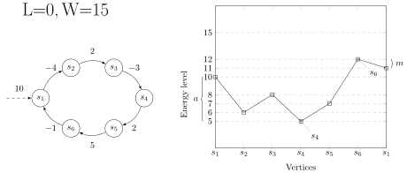

Master's thesis in fulfillment of the requirements for the degree of Master of Science
1
Introduction
$G= \langle Q_1,Q_2,E,w,q_0,T\rangle$
Each edge has integral weights. Initial energy level is always $0$ (Note that, this is no loss of generality).
$P1$ has to reach $T$ starting from $q_0$ maintaining energy level within some given bound(s).
2
Different Games
3
Related Works
Mean Payoff Games: Zwick $\& $ Paterson '96
Discounted Games: Anderson '06
L, LU $\& $ LW -infinite games: Bouyer, Fahrenberg, Larsen, Markey $ \& $ Srba '08
Multidimensional mean payoff $\& $ energy with parity: Chatterjee,Randour $\&$ Raskin '14
Quantitative games with interval objectives: Hunter, Raskin '14
Fixed-dimensional energy games are in pseudo-poly: Jurdziński, Lazić $ \& $ Schmitz '15
Total, Discounted $\&$ Energy Payoff with Reachability: Chatterjee,Doyen $ \& $ Henzinger '17
4
Single Bound Games
$P1$ has to reach $T$ from $q_0$ in a path maintaining energy level at all the prefixes $\geq 0$ given 0 initial credit.
Infinite Game $\Longleftrightarrow$ Reachability Game [In the thesis]
1-player L-infinite games are in P and 2-player are in $NP \cap coNP$.
With reachability: Same complexity
5
Strong Dual Bound Games
INPUT: A game graph, initial vertex $q_0$, target vertex $T$, lower bound $l$, upper bound $U$ QUESTION: Does $P1$ have a winning strategy to reach $T$ starting with 0 from $q_0$ maintaining the energy level $l \leq e \leq U$?
One player game: PSPACE-complete (reduction from Reachability of bounded one counter automaton )
Two player game: EXPTIME-complete (reduction from Countdown Games )
With strong bounds, reachability and Infinite Games are interreducible!!
6
Weak Dual Bound Games
We now relax the upper bound, by making it weak.
Formally,
INPUT: A game graph, initial vertex $q_0$, target vertex $T$, lower bound $L$, upper bound $W$(weak bound) QUESTION: Does $P1$ have a winning strategy to reach $T$ starting with 0 from $q_0$ maintaining the energy level $e \geq L$ such that if at any point $e$
hits $U$, it does not go above $U$?
7
Motivation
Let us look at some motivation:
This can be formulated as a two player finite state game. [Hélouët, Marchand $\&$ Mullins '18]
Now, an intruder should not be able to play a large number of normal moves, higher his reward arbitarily and then try to access the security system staying above the strong lower bound. Hence, upper bound should be weak.
8
Infinite vs Reachability in Weak Dual Bound
9
Memory for P2
10
1 Player Game
Consider a winning strategy $\sigma$ of $P1$.
Intuitively, any outcome of $\sigma$ will not have any zero cycle or negative cycle.
Now, $P1$ has two options:
► win in an acyclic path
► choose a positive cycle-iterate-increase energy to certain level-continue
11
Technical Observations
Same cycle can be positive or negative cycle depending on the initial energy level.
Let $W=4$. In this example, if $x=4$, it is a negative cycle, but if $x=1$, it is a positive cycle.
Any feasible positive cycle can be iterated and after a certain time output energy stabilizes.
Why?
12
Positive Cycle

#Iterations can be bounded by W-L.
13
Winning Path
14
Universal Cycle
Universal cycle on $q$: cycle can be taken with initial energy $L$.
Winning path: $\beta_1 \cdot \upsilon_1 \cdots \beta_k\cdot \upsilon_k$, where $\upsilon 's$ are special transitions. Path size $ \leq (|Q+1|)^2$.
Check paths of length less than or equal to $(|Q| + 1)^2$; inductively compute the maximal energy level: similar to DAG construction.
PTIME!
Corollary: Two player LW-reachability is in coNP.
18
APNA Games
(Relaxed Upper Bound)
We define different violation measures later.
19
Motivation
Let us look at the same banking system scenario:
Clearly, L=0. But, consider a normal user accidentally used some malicious actions, APNA Games come into play.
20
Notations
Violation measures for a path $\rho$ with violations:= $V(\rho) = \{i \in [0;|\rho|]\mid \tilde\rho_i>U\}$:
Total violations:= $\sharp V(\rho)= |V(\rho)|$
Maximal number of consecutive violations:= $\overline{\sharp}V(\rho) = \max\{i-j \mid \forall k\in[i,j].\ k\in V(\rho)\}$
Sum of the overloads:= $\Sigma V(\rho)= \sum_{i \in V(\rho)} (\tilde\rho_i-U)$
Given the notations, $APNA^{\sharp}$, $APNA^{\overline{\sharp}}$, $APNA^{\Sigma}$- infinite or reachability games are intuitive:
INPUT: A game graph, lower bound $l$, relaxed upper bound $U$ and a bound $V$ QUESTION: Does $P1$ have a strategy to win infinite or reachability objectives maintaining energy level $\geq L$ and for $RU$, corresponding violation measure $\leq V$?
21
Solving APNA Games
Lets go through the idea of solving APNA Games:
22
Natural Questions
Bound existence: Given $V$, decide if there exists a value $H$ such that $P1$ wins the APNA$^{*}$ games with bound $V$?
Minimization: Given $V_{max}$, find the value $H$ such that $P1$ wins the APNA$^{*}$ games with the smallest possible value for $V$.
Existence can be solved using the similar idea of $G_{APNA}$ and check reachability problems.
Minimization can be solved using binary search method within $[U, U+V_{max} \cdot w_{max}]$.
They are also PSPACE-complete for 1-player and EXPTIME-complete for two players.[Reduction from LU Games]
23
Conclusion
We have seen two kinds of games:
games with upper and lower bound constraints, combined with reachability or infinite runs objectives
games with strong lower bound and an upper bound that can be temporarily exceeded, reachability or infinite run objectives, and constraints on violations of upper bound
Future work:
consider energy games with mean payoff function
discounted total payoff for the energy level and for the violation constraints, and the associated minimization and existence problems